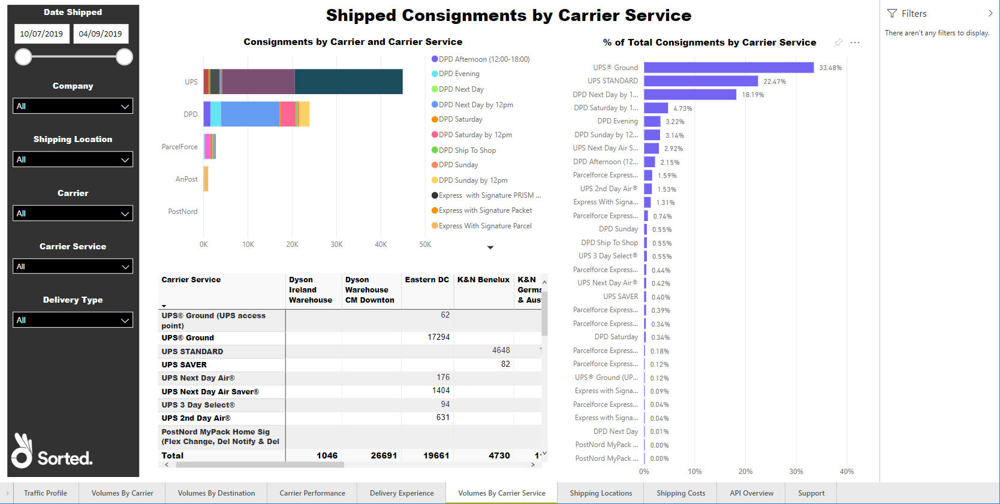
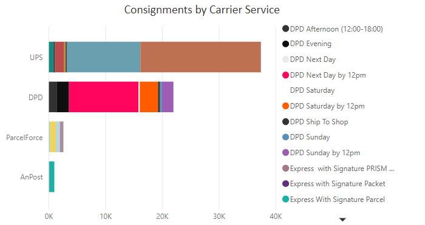
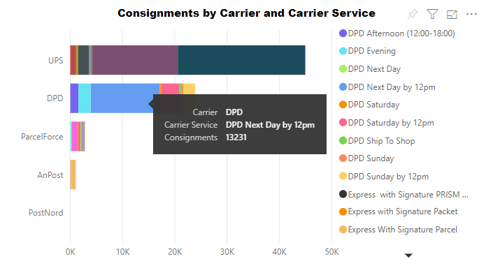
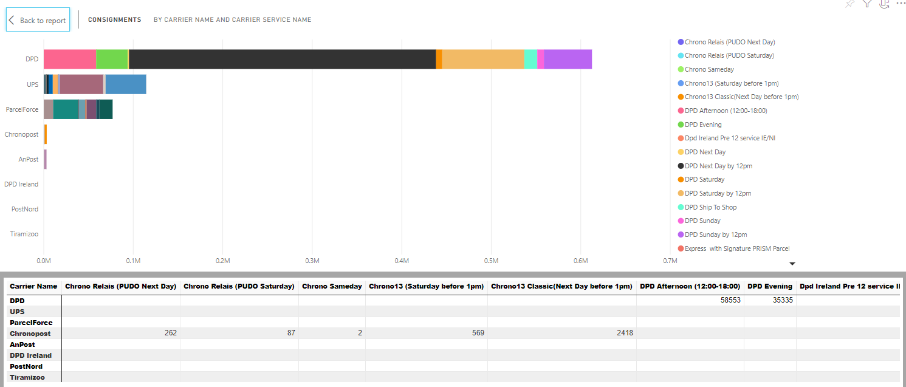
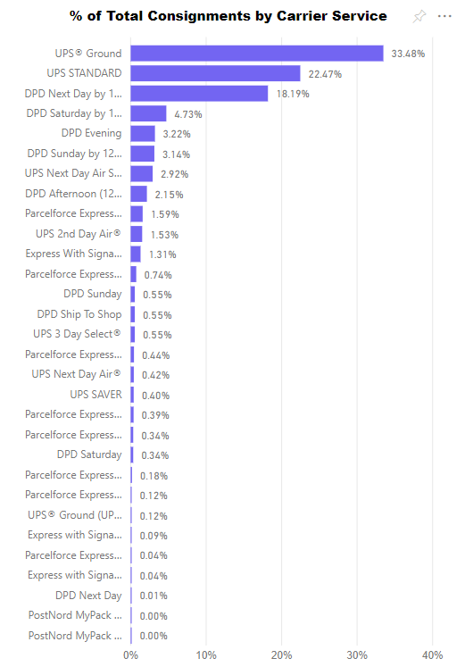
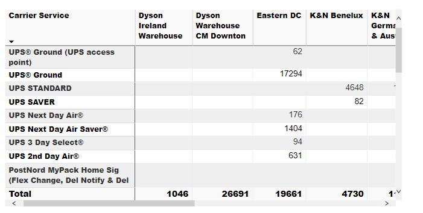

Shipped Consignments by Carrier Service
The Shipped Consignments by Carrier Service report shows a breakdown of which carrier services your consignments were allocated to.
It comprises a Consignments by Carrier and Carrier Service bar chart, a % of Total Consignments by Carrier Service bar chart, and Consignments by Shipping Location and Carrier Service table
Report Filters
The Shipped Consignments by Carrier Service report offers the following report-wide filters:
- Date Shipped - enables you to select consignments that were shipped within a given date range.
- Company - where applicable, enables you to select consignments that were shipped by a particular company within your group. You can select multiple companies if required.
- Shipping Location - where applicable, enables you to select consignments that were shipped from a particular shipping location.
- Carrier - enables you to select consignments that were shipped via a particular carrier.
- Carrier Service - enables you to select consignments that were shipped via a particular carrier service.
- Delivery Type - enables you to select consignments that were shipped as a particular delivery type (i.e. Delivery or Click and Collect).
Consignments by Carrier Name and Carrier Service Name
The Consignments by Carrier Name and Carrier Service Name bar chart shows how many of your consignments were shipped with each carrier service. Each bar represents a carrier, and the bar segments represent individual services.
Hover your mouse over the chart to see how many consignments were shipped with each carrier service.
Visual Filters
You can filter the carriers and services displayed on the Consignments by Carrier and Carrier Service Name chart using the following filters:
- Carrier Name (Basic and Advanced) - enables you to select a carrier or carriers whose services you want to view.
- Carrier Service Name (Basic and Advanced) - enables you to select a service or services to view.
- Consignments (Numerical) - enables you to filter services by number of consignments shipped. For example, if you were to filter on is greater than 5000, then only those services with which you had shipped 5001 or more consignments would be displayed.
More Options
The following options are available from the More Options menu:
- Open Comments
- Export Data
- Show Data
- Spotlight
- Sort Descending
- Sort Ascending
- Sort by Carrier / Consignments
Viewing Data
The Consignments by Carrier and Carrier Service Name chart's Show Data option shows how many consignments were sent via each carrier service.
% of Total Consignments by Carrier Service Name
The % of Total Consignments by Carrier Service Name bar chart shows the proportion of your consignments that were shipped with each carrier service. Each bar represents an individual carrier service.
Visual Filters
You can filter the carrier services displayed on the % of Total Consignments by Carrier Service Name chart using the following filters:
- Carrier Service (Basic and Advanced) - enables you to select a carrier or carriers whose services you want to view.
- Number of Packages (Numerical) - enables you to filter services by number of package shipped. For example, if you were to filter on is greater than 5000, then only those services with which you had shipped 5001 or more packages would be displayed.
More Options
The following options are available from the More Options menu:
- Open Comments
- Export Data
- Show Data
- Spotlight
- Sort Descending
- Sort Ascending
- Sort by Carrier Service / % of Total Consignments
Viewing Data

The % of Total Consignments by Carrier Service Name chart's Show Data option shows what percentage of your total consignments were sent via each carrier service.
Consignments by Shipping Location and Carrier Service
The Consignments by Shipping Location and Carrier Service table shows how many consignments were shipped from each of your shipping locations via each carrier service.
Visual Filters
You can filter the carrier services and delivery locations displayed on the Consignments by Shipping Location and Carrier Service table using the following filters:
- Carrier Service Name (Basic and Advanced) - enables you to select a service or services to view.
- Consignments (Numerical) - enables you to filter delivery locations by number of consignments shipped. For example, if you were to filter on is greater than 5000, then only those locations from which you had shipped 5001 or more consignments would be displayed.
- Shipping Location (Basic and Advanced) - enables you to select a shipping location or locations to view.
More Options
The following options are available from the More Options menu:
- Open Comments
- Export Data
- Show Data
- Spotlight
- Sort Descending
- Sort Ascending
- Sort by Carrier Service / Consignments